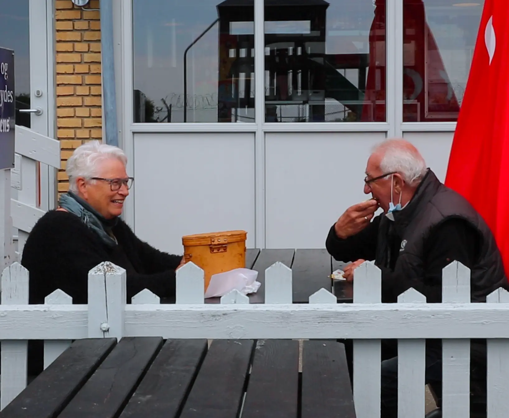

Kære gæst.
Hos Flyvergrillen er der åben for udendørs spisning uden coronapas.
Vi glæder os meget til at se dig.
Hos Flyvergrillen er der åben for udendørs spisning uden coronapas.
Vi glæder os meget til at se dig.
DEN ENESTE GRILL I DANMARK
MED EN FLYVENDE UDSIGT
EN UNIK OPLEVELSE PÅ FLYVERGRILLEN
Flyvergrillen er ikke bare et spisested, men også et udflugtssted. Imens du nyder de traditionelle grill retter, og en lækker vaffelis, kan du nyde udsigten til de store flyvemaskiner, helt tæt på.
DET SIGER VORES KUNDER
“Rigtig børnevenligt sted, hvor forældre kan slappe af mens børnene
leger. Rigtig rart personale, som bidrager til den gode stemning “
- Lene, Dragør 1/08-2019
- Lene, Dragør 1/08-2019
“Utrolig hyggeligt besøg på Flyvergrillen Vil klart anbefale at tage
familien med til Amager. Der er nok at kigge på :) “
- Marianne, Taarnby 12/09-2021
- Marianne, Taarnby 12/09-2021
“Utrolig hyggeligt besøg på Flyvergrillen Vil klart anbefale at tage
familien med til Amager. Der er nok at kigge på :) “
- Marianne, Taarnby 12/09-2021
- Marianne, Taarnby 12/09-2021
FØLG OS PÅ FACEBOOK OG INSTAGRAM